<title>Painel Echoes of the Shatter</title>
<meta name="claude:viewport-fit-sides" content="cover">
<style>
@import url('https://fonts.googleapis.com/css2?family=Cinzel:wght@600;700&family=Lilita+One&family=Source+Sans+3:wght@400;600&display=swap');
:root{--noite:#0F0B14;--escura:#161117;--media:#2A222F;--clara:#6A606E;--ouro:#D9A441;--ouro-claro:#FCD58A;--carm:#B82A1E;--lava:#E0301E;--perg:#F0E6D6;--verde:#6FB36A;--azul:#6A9BD9;
--f-tit:'Cinzel',Georgia,serif;--f-txt:'Source Sans 3',system-ui,sans-serif;--f-num:'Lilita One','Cinzel',sans-serif}
*{box-sizing:border-box}
:root{color-scheme:dark}
body{margin:0;background:var(--noite);color:var(--perg);font:16px/1.5 var(--f-txt);
padding:24px max(16px,env(safe-area-inset-right,0px)) 48px max(16px,env(safe-area-inset-left,0px))}
main{max-width:1080px;margin:0 auto}
h1,h2,h3{font-family:var(--f-tit);color:var(--ouro-claro);margin:0;line-height:1.2}
h1{font-size:clamp(1.6rem,5vw,2.4rem)}
h2{font-size:1.3rem;margin:36px 0 12px;padding-bottom:6px;border-bottom:2px solid var(--media)}
h3{font-size:1.05rem;color:var(--perg)}
p{margin:4px 0}.mut{color:var(--clara)}.peq{font-size:.85rem}
.topo{border:2px solid var(--ouro);border-radius:6px 18px 6px 18px;background:var(--escura);padding:18px 20px}
.topo .sub{color:var(--perg);margin-top:6px}
.faixa{display:grid;grid-template-columns:repeat(auto-fit,minmax(130px,1fr));gap:8px;margin-top:14px}
.faixa a{display:block;text-decoration:none;color:var(--perg);background:var(--media);border-left:5px solid var(--clara);border-radius:4px;padding:8px 10px;font-size:.9rem}
.faixa a.concluido{border-color:var(--verde)}.faixa a.nuvem{border-color:var(--azul)}.faixa a.andamento{border-color:var(--ouro)}
.faixa a.aguardando_dono{border-color:var(--lava)}.faixa a.bloqueado{border-color:var(--carm)}
.faixa b{display:block;font-family:var(--f-tit);font-size:.85rem}
.dest{margin:12px 0 0;padding:10px 14px;border:2px solid var(--verde);border-radius:4px;background:var(--media)}.dest b{display:block;color:var(--ouro-claro);overflow-wrap:anywhere}.dest span{display:block;font-size:.85rem;margin-top:4px}
.etapas{display:grid;grid-template-columns:repeat(auto-fit,minmax(150px,1fr));gap:8px;margin-top:14px}
.etapa{background:var(--media);border-radius:4px;padding:8px 10px;font-size:.85rem}.etapa b{display:block;font-family:var(--f-tit);color:var(--ouro-claro)}.etapa.concluido{border-top:4px solid var(--verde)}.etapa.andamento{border-top:4px solid var(--ouro)}.etapa.pendente{border-top:4px dashed var(--clara)}
.pend{grid-column:1/-1}.perg{font-weight:600;font-size:1.05rem;color:var(--ouro-claro);border-left:4px solid var(--lava);padding-left:10px;margin:8px 0}
.pend summary{cursor:pointer;color:var(--ouro);font-size:.9rem}.pend details p{margin:6px 0}
.opcs{display:grid;grid-template-columns:repeat(auto-fit,minmax(220px,1fr));gap:8px;margin:10px 0}.opc{background:var(--media);border:1px solid var(--clara);border-radius:4px;padding:8px 10px;font-size:.9rem}.opc b{display:block;color:var(--ouro-claro);margin-bottom:2px}
.cont{display:flex;flex-wrap:wrap;gap:16px;margin-top:14px}
.cont div{font-family:var(--f-num);font-size:1.7rem;color:var(--ouro-claro)}.cont span{display:block;font:.8rem var(--f-txt);color:var(--clara)}
.pil{display:inline-flex;align-items:center;gap:6px;font-size:.78rem;font-weight:600;padding:2px 10px 2px 8px;border-radius:99px;background:var(--media);border:1px solid var(--clara);white-space:nowrap}
.pil i{width:10px;height:10px;background:var(--clara);display:inline-block}
.pil.concluido i{background:var(--verde);border-radius:50%}
.pil.nuvem i{background:var(--azul);border-radius:50% 50% 50% 0}
.pil.andamento i{background:var(--ouro);clip-path:polygon(0 0,100% 50%,0 100%)}
.pil.aguardando_dono{border-color:var(--lava);color:var(--lava)}.pil.aguardando_dono i{background:var(--lava);transform:rotate(45deg)}
.pil.pendente i{background:transparent;border:2px solid var(--clara);border-radius:50%}
.pil.bloqueado{border-color:var(--carm)}.pil.bloqueado i{background:var(--carm)}
.grade{display:grid;grid-template-columns:repeat(auto-fill,minmax(300px,1fr));gap:12px}
.card{background:var(--escura);border:1px solid var(--media);border-radius:4px 14px 4px 14px;padding:14px 16px}
.card.alerta{border-color:var(--lava)}
.card header{display:flex;justify-content:space-between;align-items:flex-start;gap:8px;margin-bottom:6px}
.card ul{margin:8px 0 0;padding-left:18px}.card li{margin:2px 0}
.arq{display:block;color:var(--clara);font-size:.78rem;overflow-wrap:anywhere}
.prox{margin-top:10px;padding-top:8px;border-top:1px dashed var(--media);font-size:.9rem}.prox b{color:var(--ouro)}
.marcos{list-style:none;padding:0;margin:0;display:grid;gap:6px}
.marcos li{display:flex;gap:10px;align-items:center;background:var(--escura);border:1px solid var(--media);border-radius:4px;padding:8px 12px}
.marcos li i{flex:none;width:14px;height:14px;border:2px solid var(--clara);border-radius:50%}
.marcos li.ok i{background:var(--verde);border-color:var(--verde)}
.linha{list-style:none;margin:0;padding:0 0 0 14px;border-left:2px solid var(--media)}
.linha li{position:relative;padding:4px 0 8px 14px}.linha li:before{content:"";position:absolute;left:-21px;top:12px;width:10px;height:10px;background:var(--ouro);transform:rotate(45deg)}
.linha code{color:var(--ouro);font-size:.8rem}.linha .dt{color:var(--clara);font-size:.8rem;margin-left:6px}
.abas{display:flex;flex-wrap:wrap;gap:8px;margin-bottom:12px}
.abas button{font:600 .9rem var(--f-txt);color:var(--perg);background:var(--media);border:1px solid var(--clara);border-radius:99px;padding:6px 14px;cursor:pointer}
.abas button[aria-pressed=true]{background:var(--ouro);color:var(--noite);border-color:var(--ouro)}
.gal{display:grid;grid-template-columns:repeat(auto-fill,minmax(220px,1fr));gap:12px}
.gal figure{margin:0;background:var(--escura);border:1px solid var(--media);border-radius:4px;overflow:hidden}
.gal img{display:block;width:100%;height:auto;aspect-ratio:3/2;object-fit:cover;background:var(--media)}
.gal figcaption{padding:8px 10px;font-size:.85rem}.gal figcaption b{display:block;color:var(--ouro-claro)}
.gal figure.ag{border-color:var(--ouro)}
.tab{overflow-x:auto}
table{border-collapse:collapse;width:100%}td,th{text-align:left;padding:6px 10px;border-bottom:1px solid var(--media);vertical-align:top}th{color:var(--ouro)}
[hidden]{display:none!important}
@media (max-width:420px){.grade{grid-template-columns:1fr}.gal{grid-template-columns:1fr 1fr}}
/* Votação: a página define --v-fundo, --v-borda, --v-texto, --v-mut, --v-nome, --v-destaque, --v-campo, --v-botao e --v-botao-txt. */
.votacao{display:grid;gap:10px;margin-top:10px}
.v-tit{margin:0;font:600 .72rem/1.3 inherit;letter-spacing:.1em;text-transform:uppercase;color:var(--v-mut)}
.v-opcoes{list-style:none;margin:0;padding:0;display:grid;gap:8px}
.v-op{all:unset;box-sizing:border-box;width:100%;cursor:pointer;display:grid;grid-template-columns:minmax(0,14rem) minmax(0,1fr) auto;align-items:start;gap:4px 14px;padding:10px 12px;border-radius:6px;background:var(--v-fundo);border:1px solid var(--v-borda);color:var(--v-texto);font-size:.92rem;line-height:1.45}
.v-op:hover{border-color:var(--v-destaque)}
.v-op:focus-visible{outline:2px solid var(--v-destaque);outline-offset:2px}
.v-op[aria-pressed="true"]{border-color:var(--v-destaque);box-shadow:inset 4px 0 0 var(--v-destaque)}
.v-op.v-bloq{cursor:default}
.v-op b{color:var(--v-nome);font-weight:600}
.v-quem{display:flex;align-items:center;gap:6px;justify-content:flex-end;min-width:5.5rem}
.v-n{font-size:.78rem;color:var(--v-mut);white-space:nowrap;font-variant-numeric:tabular-nums}
.v-op[aria-pressed="true"] .v-n{color:var(--v-destaque);font-weight:600}
.v-rostos{display:flex}
.v-rosto{width:22px;height:22px;border-radius:50%;border:2px solid var(--v-fundo);margin-left:-6px;background:var(--v-borda);object-fit:cover}
.v-rostos .v-rosto:first-child,.v-cab .v-rosto{margin-left:0}
.v-conversa{display:grid;gap:8px;border-top:1px dashed var(--v-borda);padding-top:10px}
.v-coms{list-style:none;margin:0;padding:0;display:grid;gap:10px}
.v-coms li{display:grid;gap:2px}
.v-vazio{color:var(--v-mut);font-size:.85rem}
.v-cab{display:flex;align-items:center;gap:8px;flex-wrap:wrap;font-size:.85rem}
.v-cab b{color:var(--v-nome)}
.v-cab span{color:var(--v-mut);font-size:.78rem}
.v-coms p{margin:0 0 0 30px;white-space:pre-wrap;overflow-wrap:anywhere}
.v-rotulo{font-size:.78rem;color:var(--v-mut)}
.v-meu{width:100%;box-sizing:border-box;font:inherit;font-size:.92rem;color:var(--v-texto);background:var(--v-campo);border:1px solid var(--v-borda);border-radius:6px;padding:8px 10px;resize:vertical;min-height:2.6em}
.v-meu:focus-visible{outline:2px solid var(--v-destaque);outline-offset:1px}
.v-meu:disabled{opacity:.6}
.v-acoes{display:flex;flex-wrap:wrap;align-items:center;gap:8px 14px}
.v-salvar{font:inherit;font-size:.85rem;font-weight:600;color:var(--v-botao-txt);background:var(--v-botao);border:0;border-radius:6px;padding:7px 14px;cursor:pointer}
.v-salvar:disabled{opacity:.45;cursor:default}
.v-status{font-size:.85rem;color:var(--v-mut)}
@media (max-width:640px){.v-op{grid-template-columns:minmax(0,1fr)}.v-quem{justify-content:flex-start}}
.votacao{--v-fundo:var(--media);--v-borda:var(--clara);--v-texto:var(--perg);--v-mut:var(--clara);--v-nome:var(--ouro-claro);--v-destaque:var(--ouro);--v-campo:var(--noite);--v-botao:var(--ouro);--v-botao-txt:var(--noite)}.v-tit{font-family:var(--f-txt)}.topo a{color:var(--ouro-claro)}</style>
<main>
<section class="topo"><h1>Echoes of the Shatter</h1>
<p class="sub">Jogo 2D top-down em pixel art no Godot 4 (GDScript, cliente em godot/scripts2d/), com o Arqueiro como foco da fatia vertical. Corrida roguelike com hordas na fase aberta, gemas de XP, cartas de nível, baú de elite e chefe; o personagem começa só com o ataque básico e libera habilidades (gemas) e passivas da partida ao subir de nível, sobre uma árvore de passivos permanente (raio, veneno, gelo, fogo). Área 1 do Ato I (estrada de pedra até a arena) fechada e Pedreira dos Ecos (área 2) com terreno aprovado; inimigos da área 2 pendentes por falta de saldo no PixelLab. Próximo: inimigos da Pedreira, elites e chefe em escala maior, meta-progressão com save e hub com craft (direção de 30/10: roguelike com hub, craft e exploração, sem MMO). A Unity e o visual 3D estão arquivados (arquivo/unity-final).. Atualizado em 09/11/2026.</p>
<p class="sub"><a href="#aguardando">Votar nas perguntas</a> · <a href="https://claude.ai/artifact/5G5WBocgrp8NAeLKiF9FP8" target="_blank" rel="noopener">Roteiro completo: documentos e artes ↗</a></p>
<p class="dest"><b>Jogo 2D em pixel art no Godot: rode o cliente 2D (godot/COMO_RODAR_2D.md)</b><span>Arqueiro em pixel art (64x64, paleta fixa) numa corrida com hordas, cartas de nível e gemas de habilidade; quatro árvores elementais (raio, veneno, gelo, fogo) com identidade própria de mecânica e visual; HUD com barra de XP e nível; áreas 1 e 2 do Ato I. Desempenho: 500 inimigos em 7 ms e 1000 em 15 ms (PR 171). Teste headless: godot --headless --path godot --script res://scripts2d/tools/test_2d.gd (CI cliente2d.yml). Sem build de Steam ainda.</span></p>
<div class="faixa">
<a class="andamento" href="#s-arte"><b>Direção de arte</b>Em andamento</a>
<a class="andamento" href="#s-design"><b>Game Design</b>Em andamento</a>
<a class="concluido" href="#s-dados"><b>Dados</b>Concluído</a>
<a class="concluido" href="#s-conteudo"><b>Conteúdo e textos</b>Concluído</a>
<a class="concluido" href="#s-arquitetura"><b>Arquitetura</b>Concluído</a>
<a class="concluido" href="#s-backend"><b>Backend ShatterCore</b>Concluído</a>
<a class="andamento" href="#s-frontend"><b>Frontend Unity</b>Em andamento</a>
<a class="andamento" href="#s-arte_tecnica"><b>Arte técnica</b>Em andamento</a>
<a class="andamento" href="#s-qa"><b>QA</b>Em andamento</a>
<a class="concluido" href="#s-pesquisa"><b>Pesquisa</b>Concluído</a>
<a class="andamento" href="#s-producao"><b>Produção</b>Em andamento</a>
</div>
<div class="cont">
<div>4<span>aguardando você</span></div>
<div>0<span>sessões na nuvem</span></div>
<div>5/11<span>setores concluídos</span></div>
<div>28/35<span>marcos</span></div>
</div>
<div class="etapas">
<div class="etapa concluido"><b>Etapa 1</b>Base técnica<br><span class="pil concluido"><i></i>Concluído</span></div>
<div class="etapa andamento"><b>Etapa 2</b>Fatia jogável 2D (Arqueiro)<br><span class="pil andamento"><i></i>Em andamento</span></div>
<div class="etapa pendente"><b>Etapa 3</b>Ciclo completo do protótipo<br><span class="pil pendente"><i></i>Pendente</span></div>
<div class="etapa pendente"><b>Etapa 4</b>Elenco e Ato I<br><span class="pil pendente"><i></i>Pendente</span></div>
<div class="etapa pendente"><b>Etapa 5</b>Acesso Antecipado<br><span class="pil pendente"><i></i>Pendente</span></div>
</div></section>
<h2 id="aguardando">Aguardando você</h2>
<p class='nota'>Clique numa opção para votar e deixe um comentário em cada pergunta. Os votos de todos aparecem aqui.</p>
<div class='grade'>
<article class="card alerta pend"><h3>Quem faz a capa e as cápsulas da Steam?</h3><p class="perg">A arte final da capa e das cápsulas da página da Steam (as imagens que aparecem na loja, na busca e na biblioteca) será feita por um artista contratado, por IA (declarada na Steam) ou de forma mista (IA como base e artista finalizando)?</p><details open><summary>Contexto</summary><p>A cápsula é a imagem que mais pesa para alguém clicar no jogo. O plano diz que, se houver menos de 2 mil wishlists antes do Next Fest, a primeira coisa a trocar é a cápsula.</p><p>A política de IA do plano diz que capa e cápsulas &#x27;de preferência não&#x27; devem ser feitas por IA.</p><p>Hoje as referências de arte aprovadas foram geradas com IA (gpt-image) e os modelos 3D com o TripoSG. Então o jogo já terá de declarar uso de IA generativa no questionário da Steam, seja qual for a escolha da cápsula.</p></details><div class="votacao" data-q="capsulas-steam"></div><span class="arq">docs/design/15_etapas.md</span></article>
<article class="card alerta pend"><h3>CNPJ, Steam Direct e registros: quem cuida?</h3><p class="perg">Quem cuida das providências fora do código: abrir CNPJ, pagar o Steam Direct, preencher o formulário fiscal, registrar a marca e falar com contador e advogado?</p><details open><summary>Contexto</summary><p>Essas providências não travam o desenvolvimento, mas travam a publicação. Sem elas, não há página na Steam nem venda.</p><p>CNPJ: o plano sugere MEI, ME ou EPP no Simples, com a CNAE de jogos confirmada por um contador. Ele é necessário para editais de fomento e contratos com freelancers, e facilita receber da Steam.</p><p>Steam Direct: US$ 100 por jogo, que voltam depois de US$ 1.000 em vendas. Formulário fiscal dos EUA: W-8BEN-E (empresa) ou W-8BEN (pessoa física), para evitar retenção maior.</p><p>Marca: registrar Echoes of the Shatter no INPI (e no USPTO, se o mercado americano importar). O programa também pode ser registrado no INPI como prova de autoria.</p><p>O plano pede contrato de cessão de direitos com toda pessoa que contribuir com arte, áudio ou código. Agora que há um sócio, isso vale também para o que ele produzir.</p><p>Quando começar é a pergunta seguinte.</p></details><div class="votacao" data-q="registros-quem"></div><span class="arq">docs/design/15_etapas.md</span></article>
<article class="card alerta pend"><h3>CNPJ e página na Steam: quando começar?</h3><p class="perg">Quando começamos as providências fora do código (CNPJ, Steam Direct e a página &#x27;Em breve&#x27; na Steam): já, durante o desenvolvimento, ou só na etapa 5, perto do lançamento em Acesso Antecipado?</p><details open><summary>Contexto</summary><p>A página &#x27;Em breve&#x27; só pode ir ao ar depois que a conta de desenvolvedor existe (Steam Direct pago) e o formulário fiscal e a classificação indicativa estão preenchidos. O plano pede CNPJ antes de pagar o Steam Direct.</p><p>O plano manda pôr a página no ar cedo, no começo da fase da demo, porque as wishlists se acumulam com o tempo e pesam no destaque que a Steam dá no lançamento.</p><p>Isso não trava o código: a equipe continua produzindo o jogo seja qual for a escolha.</p></details><div class="votacao" data-q="registros-quando"></div><span class="arq">docs/design/15_etapas.md</span></article>
<article class="card alerta pend"><h3>Mover a memória virtual do Windows para o D:</h3><p class="perg">Você pode mover o arquivo de paginação do Windows (a memória virtual) do disco C: para o disco D:?</p><details open><summary>Contexto</summary><p>O Windows usa um arquivo no C: (pagefile.sys, que ocupa vários GB) como extensão da memória RAM. Com o C: cheio, a Unity, o Blender e o gerador de modelos 3D podem travar ou fechar sozinhos por falta de memória.</p><p>Por ser uma configuração do sistema, a equipe do Claude não pode alterá-la. Só você pode.</p><p>Como fazer: Iniciar, digite &#x27;Exibir configurações avançadas do sistema&#x27;, depois Desempenho &gt; Configurações &gt; aba Avançado &gt; Memória virtual &gt; Alterar. Desmarque &#x27;Gerenciar automaticamente&#x27;, escolha C: e marque &#x27;Sem arquivo de paginação&#x27; &gt; Definir. Escolha D:, marque &#x27;Tamanho gerenciado pelo sistema&#x27; &gt; Definir &gt; OK e reinicie o PC.</p></details><div class="votacao" data-q="paginacao-windows"></div><span class="arq">infraestrutura</span></article>
</div>
<h2>Marcos</h2><ul class='marcos'>
<li class="ok"><i></i><span>Visual e arquitetura definidos</span><span class="mut peq">feito</span></li>
<li class="ok"><i></i><span>Dados e textos do protótipo</span><span class="mut peq">feito</span></li>
<li class="ok"><i></i><span>Infraestrutura de desenvolvimento</span><span class="mut peq">feito</span></li>
<li class="ok"><i></i><span>ShatterCore completo com API C</span><span class="mut peq">feito</span></li>
<li class="ok"><i></i><span>Graybox da Cripta e dos personagens aprovado</span><span class="mut peq">feito</span></li>
<li class="ok"><i></i><span>Gameplay do Guerreiro compilando na Unity</span><span class="mut peq">feito</span></li>
<li class=""><i></i><span>Protótipo jogável do Guerreiro na Cripta Partida</span><span class="mut peq">falta</span></li>
<li class="ok"><i></i><span>Folhas de modelagem, heróis modulares e cenário aprovados</span><span class="mut peq">feito</span></li>
<li class="ok"><i></i><span>Guerreiro 3D final na Unity com shader de rim</span><span class="mut peq">feito</span></li>
<li class="ok"><i></i><span>Etapa 2: Cripta montada na escala aprovada</span><span class="mut peq">feito</span></li>
<li class="ok"><i></i><span>Etapa 2: DLL real na Unity</span><span class="mut peq">feito</span></li>
<li class=""><i></i><span>Fatia jogável da Cripta (Etapa 2)</span><span class="mut peq">falta</span></li>
<li class="ok"><i></i><span>Build jogável v0.1 (Windows)</span><span class="mut peq">feito</span></li>
<li class="ok"><i></i><span>Modelos pintados e animações na Cripta</span><span class="mut peq">feito</span></li>
<li class="ok"><i></i><span>Etapa 3: save, Refúgio e expedição idle prontos</span><span class="mut peq">feito</span></li>
<li class="ok"><i></i><span>Etapa 3: inventário completo no jogo</span><span class="mut peq">feito</span></li>
<li class="ok"><i></i><span>Etapa 3: animação rev1 a rev6 e VFX das habilidades</span><span class="mut peq">feito</span></li>
<li class="ok"><i></i><span>Etapa 3: economia (API C 1.7), cliente da Cripta, Vendedor e Encantador</span><span class="mut peq">feito</span></li>
<li class="ok"><i></i><span>Etapa 3: cenário rev1 e rev2 aprovados</span><span class="mut peq">feito</span></li>
<li class="ok"><i></i><span>Etapa 3 integrada no master (economia, polimento, mapa, cenário)</span><span class="mut peq">feito</span></li>
<li class="ok"><i></i><span>Repositório reorganizado (PR #5)</span><span class="mut peq">feito</span></li>
<li class="ok"><i></i><span>História da Região 1 no master (core, cliente, falas, missões, efeitos do veredito)</span><span class="mut peq">feito</span></li>
<li class="ok"><i></i><span>Checagem do cliente C# sem Unity no CI (PR #22)</span><span class="mut peq">feito</span></li>
<li class=""><i></i><span>Build integrado e vídeo de gameplay da Cripta</span><span class="mut peq">falta</span></li>
<li class=""><i></i><span>Região 1 jogável de ponta a ponta (compilar, playtest, build dev3)</span><span class="mut peq">falta</span></li>
<li class="ok"><i></i><span>Migração para o Godot 4 e abandono da Unity (20/10)</span><span class="mut peq">feito</span></li>
<li class="ok"><i></i><span>Visual 2D top-down em pixel art definitivo (29/10)</span><span class="mut peq">feito</span></li>
<li class="ok"><i></i><span>Corrida roguelike com hordas, XP e cartas de nível</span><span class="mut peq">feito</span></li>
<li class="ok"><i></i><span>Arqueiro com quatro árvores elementais e passivas da partida</span><span class="mut peq">feito</span></li>
<li class="ok"><i></i><span>Arqueiro em pixel art 64x64 no jogo</span><span class="mut peq">feito</span></li>
<li class="ok"><i></i><span>Área 1 do Ato I fechada (estrada, marcos e encontros)</span><span class="mut peq">feito</span></li>
<li class="ok"><i></i><span>Área 2 (Pedreira dos Ecos): terreno aprovado</span><span class="mut peq">feito</span></li>
<li class=""><i></i><span>Área 2: inimigos em pixel art</span><span class="mut peq">falta</span></li>
<li class=""><i></i><span>Meta-progressão com save e hub com craft</span><span class="mut peq">falta</span></li>
<li class=""><i></i><span>Build jogável 2D para o Windows</span><span class="mut peq">falta</span></li>
</ul>
<h2>Setores</h2><div class='grade'>
<article class="card" id="s-arte"><header><div><h3>Direção de arte</h3><span class="mut peq">Art Director</span></div><span class="pil andamento"><i></i>Em andamento</span></header>
<p>Visual 2D top-down em pixel art é o definitivo desde 29/10 (docs/arte/26_direcao_visual_2d.md). Arqueiro em sprites 64x64 gerados no PixelLab, piso, braseiro e props pixelados; área 1 polida e terreno da área 2 (Pedreira dos Ecos) aprovado. O 3D estilo Spell Brigade foi arquivado.</p><ul>
<li>24 referências de arte aprovadas<span class="arq">docs/arte/referencias-geracao/aprovadas/</span></li>
<li>Design system e tokens de cor da interface<span class="arq">docs/arte/03_design_system.md, docs/arte/03_design_tokens.json</span></li>
<li>Decisões de visual 3D e motor<span class="arq">docs/arte/08_decisoes_visual_3d.md</span></li>
<li>Folhas de modelagem m01 a m09, heróis modulares e cenário c01 a c06<span class="arq">docs/arte/referencias-geracao/aprovadas/modelagem/</span></li>
<li>Régua de escala do Spell Brigade<span class="arq">docs/arte/regua_spell_brigade.md</span></li>
<li>Folha do conjunto Raro do Guerreiro (m10), aprovada em 18/10<span class="arq">docs/arte/referencias-geracao/aprovadas/modelagem/</span></li>
<li>Folhas dos NPCs do Refúgio (Ilsa, Tico, Vendedor, Encantador), aprovadas em 18/10<span class="arq">docs/arte/referencias-geracao/aprovadas/modelagem/</span></li>
</ul><p class="prox"><b>Próximo passo:</b> Inimigos da Pedreira dos Ecos (falta saldo no PixelLab) e elites e chefe em escala maior.</p></article>
<article class="card" id="s-design"><header><div><h3>Game Design</h3><span class="mut peq">Game Designer</span></div><span class="pil andamento"><i></i>Em andamento</span></header>
<p>Design fixo de 01/11: árvore de passivos permanente no personagem; a partida começa só com o ataque básico e libera gemas de habilidade e passivas da partida por nível. Direção de 30/10: roguelike com hub, craft e exploração. Docs 27 a 37 em docs/design/.</p><ul>
<li>Decisões que travavam o protótipo (10 itens)<span class="arq">docs/design/13_design_pendencias.md</span></li>
<li>Layout da Cripta na escala da zona A<span class="arq">docs/tecnico/14_layout_cripta.md</span></li>
<li>Etapas do jogo (5 etapas)<span class="arq">docs/design/15_etapas.md</span></li>
<li>Etapa 3: fluxo, 14 telas e 27 critérios<span class="arq">docs/design/16_etapa3_fluxo.md</span></li>
</ul><p class="prox"><b>Próximo passo:</b> Hub com craft básico e exploração por rotas.</p></article>
<article class="card" id="s-dados"><header><div><h3>Dados</h3><span class="mut peq">Data Engineer</span></div><span class="pil concluido"><i></i>Concluído</span></header>
<p>Etapa 2 entregue: etapa2/dados no master (merge bcf7864) com 5 tabelas novas, slot legs, visualSetId, save v2, chaves de esquiva e de combate, loot de elite e transição do Guardião.</p><ul>
<li>Tabelas CSV do conteúdo (habilidades, inimigos, itens, mapas, regras)<span class="arq">EchoesOfTheShatter/Content/Data/*.csv</span></li>
<li>Esquemas JSON e validador<span class="arq">EchoesOfTheShatter/Content/Data/schemas/, tools/dados/validate_data.py</span></li>
<li>Documento de dados<span class="arq">docs/tecnico/06_dados.md</span></li>
</ul><p class="prox"><b>Próximo passo:</b> Ajustar números quando o Game Designer rever o balanceamento do idle.</p></article>
<article class="card" id="s-conteudo"><header><div><h3>Conteúdo e textos</h3><span class="mut peq">Narrative</span></div><span class="pil concluido"><i></i>Concluído</span></header>
<p>Textos pt_BR e en; 35 chaves novas da Etapa 2 (incluindo o slot Calça). Mais 177 chaves de texto das telas da Etapa 3. 6 chaves de texto repetidas removidas.</p><ul>
<li>Resumo do conteúdo e do tom<span class="arq">docs/design/05_conteudo.md</span></li>
<li>Textos pt_BR e en (interface, conteúdo, diálogos, expedição)<span class="arq">EchoesOfTheShatter/Content/Data/Loc/*.csv</span></li>
</ul><p class="prox"><b>Próximo passo:</b> Aguardar a história em criação pelo dono.</p></article>
<article class="card" id="s-arquitetura"><header><div><h3>Arquitetura</h3><span class="mut peq">Tech Lead</span></div><span class="pil concluido"><i></i>Concluído</span></header>
<p>Godot 4 como motor (decisão de 20/10) com cliente 2D em GDScript; o ShatterCore (C++17) continua como motor de regras e a migração das regras do cliente 2D ao core vem depois do jogável (M10). Arquitetura antiga em Unity é histórico.</p><ul>
<li>Documento de arquitetura (cliente, núcleo, interop, testes)<span class="arq">docs/tecnico/04_arquitetura.md</span></li>
<li>Interfaces do ShatterCore em C++<span class="arq">ShatterCore/include/shatter/*.h</span></li>
<li>Personagem modular (04 §17.4) e proposta C-10 do slot legs<span class="arq">docs/tecnico/04_arquitetura.md</span></li>
<li>Revisão de código: 0 crítico, 6 alto, 11 médio, 26 baixo<span class="arq">docs/tecnico/11_revisao_codigo.md</span></li>
</ul><p class="prox"><b>Próximo passo:</b> Migrar a regra do cliente 2D ao ShatterCore (docs/design/27, seção 10).</p></article>
<article class="card" id="s-backend"><header><div><h3>Backend ShatterCore</h3><span class="mut peq">Backend Engineer</span></div><span class="pil concluido"><i></i>Concluído</span></header>
<p>Etapa 2 entregue: etapa2/backend no master (merge d9b8eb3) com as 11 regras do docs/13 (poções, esquiva, stun e Guarda Quebrada, escudo e fases do Guardião, elites, Único com garantia, recuo a 0,25), slot legs, save v2 e API C 1.1 com início e coleta de expedição confiáveis. Testes: 146 do core e 21 da API C, mais o validador. Revisão de segurança ok. Falta só a fuga do Cão no simulador. Revisão na nuvem (docs/17) com todos os achados críticos e altos corrigidos; CI verde; fuga do inimigo decidida pelo core; API C 1.3. Inventário, equipamento, comparação, venda e loot no chão no core (API C minor 4): 199 testes do core e 27 da API C. Avisos do GCC e do Clang corrigidos, CI verde. Em 17 e 18/10: API C 1.6 e 1.7 (economia, Vendedor, Encantador, XP, estado do mundo, baús, encontros), carga e explosão pelo core, rampa de movimento; branch etapa3/economia integrada no master (merge 48cdab2). Contagem de testes (251 do core e 41 da API C) vem da passagem de bastão de 18/10.</p><ul>
<li>Motor em C++ já no repositório (dano, efeitos, loot, expedição, save)<span class="arq">ShatterCore/src/*.cpp</span></li>
<li>Testes do núcleo já no repositório<span class="arq">ShatterCore/tests/*.cpp</span></li>
<li>CI do núcleo em Linux<span class="arq">.github/workflows/core.yml, manual.yml</span></li>
<li>CI roda a cada push no núcleo (último sucesso em 3ad87b9)<span class="arq">.github/workflows/core.yml</span></li>
<li>API C 1.6 e 1.7: Vendedor, recompra, Frasco de Recarga, Encantador, XP, estado do mundo, baús e encontros sorteados (merge 48cdab2)<span class="arq">ShatterCore/include/shatter/, ShatterCore/src/</span></li>
<li>Rampa de movimento do herói no core (hero_move_accel_seconds e hero_move_decel_seconds)<span class="arq">EchoesOfTheShatter/Content/Data/</span></li>
<li>Dados da economia e da Cripta, linhas F1 do Guerreiro; content_version 2 (7a07013)<span class="arq">EchoesOfTheShatter/Content/Data/</span></li>
</ul><p class="prox"><b>Próximo passo:</b> Itens pequenos pedidos pelo cliente: DPS da arma no painel de atributos e restaurar item no desfazer do inventário.</p></article>
<article class="card" id="s-frontend"><header><div><h3>Frontend Unity</h3><span class="mut peq">Frontend Engineer</span></div><span class="pil andamento"><i></i>Em andamento</span></header>
<p>Cliente 2D em Godot/GDScript (godot/scripts2d/): hordas, cartas de nível, gemas de habilidade, passivas da partida, HUD v7, mundo em SubViewport de pixel art, lint de GDScript e teste de estresse no CI. O cliente Unity foi abandonado.</p><ul>
<li>Projeto Unity 6.3 URP criado<span class="arq">EchoesOfTheShatter/</span></li>
<li>Cena base na escala 56 m<span class="arq">EchoesOfTheShatter/Assets/Scenes/Sandbox/Base_Escala.unity</span></li>
<li>Cripta jogável na escala aprovada<span class="arq">EchoesOfTheShatter/Assets/Scenes/Cripta/Cripta.unity</span></li>
<li>Animação do herói e dos inimigos, rev1 a rev6 (merge 885b68a, etapa3/polimento)<span class="arq">EchoesOfTheShatter/Assets/</span></li>
<li>VFX das habilidades: biblioteca, vitrine sem janela, arco de lâmina, fogo, guarda no chão<span class="arq">EchoesOfTheShatter/Assets/</span></li>
<li>Fechamento do cliente da Cripta: fase 2, checkpoint, morte, HUD, menus, relatório (merge 22c5dd9, etapa3/mapa)<span class="arq">EchoesOfTheShatter/Assets/</span></li>
<li>Vendedor (S-14), Encantador (S-15), pontos de interação do Refúgio, Frasco de Recarga e nível imediato<span class="arq">EchoesOfTheShatter/Assets/</span></li>
<li>Kit de UI 9-slice, slots por raridade, botões e ícones de item<span class="arq">EchoesOfTheShatter/Assets/</span></li>
</ul><p class="prox"><b>Próximo passo:</b> Meta-progressão com save, hub com craft básico e exploração por rotas (docs/design/27, seções 6 a 10).</p></article>
<article class="card" id="s-arte_tecnica"><header><div><h3>Arte técnica</h3><span class="mut peq">Artista técnico (Blender)</span></div><span class="pil andamento"><i></i>Em andamento</span></header>
<p>Pipeline 2D: PixelLab (geração de sprites), folhas de sprites 2D (docs/arte/25) e VFX em pixel art. O pipeline 3D (TripoSG, Blender, FBX) está arquivado.</p><ul>
<li>Graybox dos 3 heróis, inimigos e chefe (Blender e FBX)<span class="arq">art-src/graybox/</span></li>
<li>Prévias em imagem<span class="arq">art-src/graybox/previews/</span></li>
<li>Forma 3D do Guerreiro (TripoSG)<span class="arq">D:/openclaude/_trabalho-claude/modelos3d/m01_guerreiro/</span></li>
<li>Pesquisa de modelos 3D grátis<span class="arq">docs/pesquisa/modelos_3d_gratis.md</span></li>
<li>Conjunto Raro do Guerreiro em 3D (vset.warrior_rare_01, 5 peças)<span class="arq">art-src/graybox/</span></li>
<li>Cenário rev2: poças quentes, portão de pedra com grade, círculos de runas, braseiros (10c0f95)<span class="arq">EchoesOfTheShatter/Assets/</span></li>
<li>Cenário: piso por células, parede chanfrada, luz das tochas e pós do URP (04c51bb); rev3 parcial no merge 2e7c57f<span class="arq">EchoesOfTheShatter/Assets/</span></li>
</ul><p class="prox"><b>Próximo passo:</b> Efeitos das habilidades novas e inimigos das áreas seguintes.</p></article>
<article class="card" id="s-qa"><header><div><h3>QA</h3><span class="mut peq">QA Engineer</span></div><span class="pil andamento"><i></i>Em andamento</span></header>
<p>Teste headless do cliente 2D (test_2d.gd) e lint de GDScript rodam no CI (cliente2d.yml); testes do core no core.yml.</p><ul>
<li>Plano de QA (matriz de requisitos e casos)<span class="arq">docs/requisitos-qa/10_qa.md</span></li>
</ul><p class="prox"><b>Próximo passo:</b> Roteiro de playtest e dez corridas automáticas sem travar (pacote P6).</p></article>
<article class="card" id="s-pesquisa"><header><div><h3>Pesquisa</h3><span class="mut peq">Pesquisador de referências</span></div><span class="pil concluido"><i></i>Concluído</span></header>
<p>Pesquisa do canal @stefan_3d_ai feita com acesso limitado ao YouTube.</p><ul>
<li>Pesquisa do canal @stefan_3d_ai<span class="arq">docs/pesquisa/stefan_3d_ai.md</span></li>
</ul><p class="prox"><b>Próximo passo:</b> Nenhum; a lista de vídeos do canal não pôde ser obtida.</p></article>
<article class="card" id="s-producao"><header><div><h3>Produção</h3><span class="mut peq">Orquestrador</span></div><span class="pil andamento"><i></i>Em andamento</span></header>
<p>Trabalho por threads, uma por assunto, cada uma com branch temporária, PR, CI verde e merge no master; revisões de design e arte feitas pelas threads revisoras, sem o Will revisar. Passagens de bastão curtas em docs/progresso/.</p><ul>
<li>Plano de execução e próximos passos<span class="arq">docs/requisitos-qa/01_plano_execucao.md, docs/requisitos-qa/07_proximos_passos.md</span></li>
<li>Este painel<span class="arq">docs/progresso/estado.json, tools/painel/gerar_painel.py</span></li>
<li>Reorganização do repositório (PR #5): docs por assunto, Godot em prototipos/, tools por área<span class="arq">docs/README.md</span></li>
<li>Regra de modelo certo para cada tarefa (Haiku, Sonnet, Opus, Fable)<span class="arq">CLAUDE.md</span></li>
<li>Proposta de alinhamento de contexto, dupla e escopo<span class="arq">docs/design/20_alinhamento_ia_e_escopo.md</span></li>
</ul><p class="prox"><b>Próximo passo:</b> Fechar M5 do cronograma (docs/design/27), depois meta-progressão com save.</p></article>
</div>
<h2>Linha do tempo</h2><ul class='linha'>
<li><code>5c37e05</code><span class="dt">08/11/2026</span><br>feat(2d): ajustes finos da Pedreira dos Ecos depois da revisão do Jev e do crítico (#218)</li>
<li><code>fb1db8d</code><span class="dt">08/11/2026</span><br>feat(mapa): Pedreira dos Ecos, área 2 do Ato I (terreno aprovado, inimigos pendentes) (#217)</li>
<li><code>a9a480d</code><span class="dt">08/11/2026</span><br>feat(arte): polimento da área 1 com sombra sob os arcos, números de dano em fonte pixel e barra do morcego mais alta (#216)</li>
<li><code>72fce65</code><span class="dt">08/11/2026</span><br>feat(mapa): acabamento da área 1 depois da revisão de design e de arte (#215)</li>
<li><code>cb0aafb</code><span class="dt">07/11/2026</span><br>feat(mapa): estrada de pedra, marcos com luz, bolsão e encontros na área 1 do arqueiro (#214)</li>
<li><code>cf9f21a</code><span class="dt">06/11/2026</span><br>feat(arte): dano menor, golpe forte laranja, barra com borda e olhos do morcego 2x2 (#213)</li>
<li><code>2d5056e</code><span class="dt">06/11/2026</span><br>feat(arte): número de dano menor e olhos do morcego e do encapuzado (#212)</li>
<li><code>1208362</code><span class="dt">06/11/2026</span><br>feat(arte): retoque dos inimigos com olhos luminosos e 24 cores (#211)</li>
<li><code>cc6045c</code><span class="dt">06/11/2026</span><br>feat(arte): follow-ups do polimento e inimigos na densidade de pixel do arqueiro (#210)</li>
<li><code>666665e</code><span class="dt">06/11/2026</span><br>feat(arte): sombras chapadas com dither, pedras com contorno e facetas, dica de controles sem faixa (#209)</li>
<li><code>e6f46c4</code><span class="dt">06/11/2026</span><br>feat(arte): etapa 2, fase do arqueiro com props pixelados, braseiro novo e corrida de frente (#207)</li>
<li><code>d53bd94</code><span class="dt">06/11/2026</span><br>feat(arte): fecha o arqueiro em pixel art no jogo, etapa 1 (#206)</li>
<li><code>0cd4845</code><span class="dt">05/11/2026</span><br>feat(arte): arqueiro, piso e braseiro gerados no PixelLab (#205)</li>
<li><code>4707529</code><span class="dt">04/11/2026</span><br>feat(arqueiro): sprite v7 com proporção humana ligado ao jogo (#203)</li>
<li><code>ea2d9eb</code><span class="dt">02/11/2026</span><br>feat(arqueiro): sprite em pixel art na grade (64x64, 42 px, paleta fixa) (#202)</li>
<li><code>75dd850</code><span class="dt">02/11/2026</span><br>feat(arqueiro): segundo leque com 12 skills novas e ícones próprios (#197)</li>
<li><code>75a545b</code><span class="dt">02/11/2026</span><br>perf(2d): horda fluida: sombras em lote, material de flash sob demanda, redesenho por evento e culling por blocos (#200)</li>
<li><code>29d79a8</code><span class="dt">02/11/2026</span><br>feat(2d): mundo em SubViewport de pixel art (360 de altura, escala inteira, nearest) (#198)</li>
<li><code>d9cb3e2</code><span class="dt">02/11/2026</span><br>perf(2d): folhas do clima em lote e aquecimento de recursos (FPS 34 para 81 no início) (#199)</li>
<li><code>00745d5</code><span class="dt">01/11/2026</span><br>feat(arqueiro): leque de skills com identidade própria: Ecos do básico e cinco skills novas (#195)</li>
<li><code>a519584</code><span class="dt">01/11/2026</span><br>feat(hud): HUD v7 compacta, globos juntos à esquerda e barra de XP (#142)</li>
<li><code>7f3a7d0</code><span class="dt">01/11/2026</span><br>perf(2d): hit stop com folga, teto de faíscas/partículas/números e dano periódico sem tremor (#188)</li>
<li><code>822210d</code><span class="dt">01/11/2026</span><br>fix(cliente2d): glifos legíveis, sigilo fechado, lajes quebradas na arena e tufos nos bosques (#193)</li>
<li><code>5140df8</code><span class="dt">01/11/2026</span><br>feat(arqueiro): folha de ataque redesenhada por direção + pontos de saída (#194)</li>
<li><code>dc31da9</code><span class="dt">01/11/2026</span><br>feat(cliente2d): assentar props no chão em todos os mapas (padrão do spawner) (#175)</li>
<li><code>080c2ea</code><span class="dt">01/11/2026</span><br>feat(hud): barra de XP e nível do personagem no modo horda (#189)</li>
<li><code>9cda22f</code><span class="dt">01/11/2026</span><br>docs(catalogo): ferramentas de VFX em pixel art (Jeff FX, gerador de habilidades, detalhes do pixelfx) (#192)</li>
<li><code>2075adf</code><span class="dt">01/11/2026</span><br>feat(arqueiro): física das habilidades (boca do arco, aura no chão, projétil em arco, leque escalonado) (#186)</li>
<li><code>4829bca</code><span class="dt">01/11/2026</span><br>feat(rogue): skills da partida por gema (começo cru, duas camadas) e fim do impasse do bot (H4b) (#174)</li>
<li><code>91e74e0</code><span class="dt">01/11/2026</span><br>Merge pull request #181 from Willvinicius2/chore/limpeza-repo</li>
<li><code>6ac17a3</code><span class="dt">01/11/2026</span><br>docs(arte): regra visual das duas camadas de passivas (árvore fixa e da partida) (#185)</li>
<li><code>13b272a</code><span class="dt">01/11/2026</span><br>feat(arqueiro): passivas da partida (cartas e preparos) e recarga da árvore nas ativas (#187)</li>
<li><code>a40c49d</code><span class="dt">01/11/2026</span><br>docs(arte)+art(arqueiro): causa raiz dos ataques (folha mira à direita), brief do redesenho e folha de ataque limpa (#183)</li>
<li><code>ab0b0d8</code><span class="dt">01/11/2026</span><br>docs(design): árvore de passivos fixa mais passivas da partida (#184)</li>
<li><code>08b81a7</code><span class="dt">01/11/2026</span><br>feat(arqueiro): árvore de passivos que modifica as skills (dano, quantidade, área, velocidade, forma) (#182)</li>
<li><code>15cea54</code><span class="dt">01/11/2026</span><br>fix(arqueiro): flechas elementais saem do peito na direção da mira e as auras ficam no chão, atrás do personagem (#177)</li>
<li><code>994a6a7</code><span class="dt">01/11/2026</span><br>chore: limpeza do repositório e pastas de ferramentas unificadas</li>
<li><code>b0ca985</code><span class="dt">01/11/2026</span><br>fix(arqueiro): impacto da Flecha Ardente entra na cena de forma diferida (add_child falhava no tree_exiting) (#176)</li>
<li><code>031981a</code><span class="dt">01/11/2026</span><br>docs(arte): guia de direção visual dos efeitos das habilidades (#180)</li>
<li><code>dff4812</code><span class="dt">01/11/2026</span><br>docs(design): plano da árvore de passivos do Arqueiro e impacto nas skills (#179)</li>
<li><code>912b6fd</code><span class="dt">01/11/2026</span><br>feat(arqueiro): integra as árvores de gelo, fogo e raio (#173)</li>
<li><code>d80ff17</code><span class="dt">01/11/2026</span><br>feat(rogue): hordas na fase aberta com gemas de XP, cartas de nível, baú de elite e curva por onda (H4) (#170)</li>
<li><code>d8855c0</code><span class="dt">01/11/2026</span><br>feat(arqueiro): integra a árvore de veneno (#172)</li>
<li><code>b063837</code><span class="dt">01/11/2026</span><br>perf(cliente2d): hordas grandes, 500 inimigos em 7 ms e 1000 em 15 ms (#171)</li>
<li><code>5c930ce</code><span class="dt">01/11/2026</span><br>feat(arqueiro): árvore de Raio (efeitos, arte pintada, doc 32_raio)</li>
<li><code>ce5204e</code><span class="dt">01/11/2026</span><br>feat(arqueiro): árvore de gelo — efeitos, sprites e ícones (#167)</li>
<li><code>9d58bac</code><span class="dt">01/11/2026</span><br>feat(cliente2d): props presos ao chão e ponte de pedra sobre o riacho (H5) (#154)</li>
<li><code>d026e63</code><span class="dt">01/11/2026</span><br>feat(cliente2d): árvore de fogo do arqueiro (efeitos, prompts e doc) (#164)</li>
<li><code>0172457</code><span class="dt">01/11/2026</span><br>feat(arqueiro): árvore de veneno (efeitos, 9 folhas de FX e 4 ícones) (#166)</li>
<li><code>abe9f18</code><span class="dt">01/11/2026</span><br>feat(cliente2d): lint de GDScript no CI, console de playtest (LimboConsole) e teste de estresse de horda (#169)</li>
<li><code>35a1a39</code><span class="dt">01/11/2026</span><br>fix(ci): capturas-terreno compila a GDExtension; guarda hud nulo em run_2d (#161)</li>
<li><code>18d8e95</code><span class="dt">01/11/2026</span><br>fix(cliente2d): divisa grama/pedra esfumada, runas com sulco e fim da estrada na arena (#160)</li>
<li><code>e4ed331</code><span class="dt">01/11/2026</span><br>docs(design): árvore do Arqueiro montada a partir das referências do PoE 2 (#168)</li>
<li><code>ac343a8</code><span class="dt">01/11/2026</span><br>fix(cliente2d): autocast só mira em quem aparece na tela e tem linha de visão (#159)</li>
<li><code>cdbe12d</code><span class="dt">01/11/2026</span><br>docs(design): notas da pesquisa de PoE 2 no plano do Arqueiro (#165)</li>
<li><code>f307d0a</code><span class="dt">01/11/2026</span><br>docs(design): plano das 4 árvores elementais do Arqueiro (raio, veneno, gelo, fogo) (#162)</li>
</ul>
<h2>Decisões tomadas</h2><div class='grade'>
<article class="card"><h3>Visual no estilo Spell Brigade</h3><p>3D pintado à mão, personagens chibi, no lugar da pixel art.</p><span class="arq">16/10/2026</span></article>
<article class="card"><h3>Motor: Unity 6 + URP (histórico, substituído pelo Godot 4 .NET em 20/10)</h3><p>Antes Godot 4, depois Unreal 5.8.</p><span class="arq">16/10/2026</span></article>
<article class="card"><h3>Mago com capuz e cajado de cristal</h3><p>Sem lanterna.</p><span class="arq">16/10/2026</span></article>
<article class="card"><h3>Fogo do Mago vermelho-laranja</h3><p>Como na arte aprovada.</p><span class="arq">16/10/2026</span></article>
<article class="card"><h3>Tudo do projeto no disco D</h3><p>O disco C está cheio.</p><span class="arq">16/10/2026</span></article>
<article class="card"><h3>Agentes por setor</h3><p>Trabalho pesado roda na nuvem.</p><span class="arq">16/10/2026</span></article>
<article class="card"><h3>Escudada liberada no nível 4</h3><p>No protótipo, conforme a recomendação do Game Designer; skills.csv passa de 5 para 4.</p><span class="arq">16/10/2026</span></article>
<article class="card"><h3>Segunda poção: Poção de Resguardo</h3><p>Barreira de 30%, 2 cargas, 60 s.</p><span class="arq">16/10/2026</span></article>
<article class="card"><h3>Arena do Guardião com pilares</h3><p>A investida que bate num pilar atordoa o chefe e derruba o escudo.</p><span class="arq">16/10/2026</span></article>
<article class="card"><h3>Guardião obrigatório nesta rodada</h3><p>Decisão P-2.</p><span class="arq">16/10/2026</span></article>
<article class="card"><h3>Teste de paridade adiado</h3><p>Fica para a próxima rodada; expedições idle usam números estimados com selo &quot;Estimativa&quot; (P-3).</p><span class="arq">16/10/2026</span></article>
<article class="card"><h3>PC de referência: PC de entrada genérico</h3><p>GPU de 4 GB (nível GTX 1050 Ti/RX 570), CPU de 4 núcleos, 8 GB de RAM, 1080p (P-4).</p><span class="arq">16/10/2026</span></article>
<article class="card"><h3>Licença Unity Personal ciente</h3><p>Vale até US$ 200 mil de receita ou investimento em 12 meses; acima disso, Unity Pro (P-5).</p><span class="arq">16/10/2026</span></article>
<article class="card"><h3>CI só do núcleo na nuvem</h3><p>GitHub Actions em Linux para o ShatterCore e a validação das tabelas; builds e testes da Unity rodam no PC do dono quando ele pedir.</p><span class="arq">16/10/2026</span></article>
<article class="card"><h3>Câmera a 56 m (faixa de 48 a 66 m)</h3><p>Escala de mapa da zona A: arena de 40 m com pilares, salas de 24 a 32 m, corredores de 6 m.</p><span class="arq">16/10/2026</span></article>
<article class="card"><h3>Motor continua Unity (substituída em 20/10 pelo Godot)</h3><p>A Unreal não resolveria; o Spell Brigade é Unity 6 com URP.</p><span class="arq">16/10/2026</span></article>
<article class="card"><h3>Packs KayKit recusados como provisórios</h3><p>Não entram nem como arte temporária.</p><span class="arq">16/10/2026</span></article>
<article class="card"><h3>Modelos 3D pelo TripoSG (licença MIT)</h3><p>Gerados a partir das folhas de modelagem aprovadas.</p><span class="arq">16/10/2026</span></article>
<article class="card"><h3>Heróis modulares</h3><p>Corpo base mais peças; a calça é espaço de equipamento próprio (legs) e a aparência aprovada vira a armadura inicial.</p><span class="arq">16/10/2026</span></article>
<article class="card"><h3>Inimigos reaparecem ao voltar ao checkpoint</h3><p>Vale para toda a Cripta.</p><span class="arq">16/10/2026</span></article>
<article class="card"><h3>A porta da arena fecha até o fim da luta</h3><p>Só abre quando o Guardião cai.</p><span class="arq">16/10/2026</span></article>
<article class="card"><h3>Graybox aprovado só como provisório</h3><p>Será trocado pelos modelos 3D finais.</p><span class="arq">16/10/2026</span></article>
<article class="card"><h3>Animações por três fontes</h3><p>Pacote CC0 KayKit (só as animações), Mixamo baixado por você e Blender por script.</p><span class="arq">17/10/2026</span></article>
<article class="card"><h3>Kimodo pausado</h3><p>A IA de animação fica de lado por enquanto.</p><span class="arq">17/10/2026</span></article>
<article class="card"><h3>Golpes do Blender aprovados</h3><p>Entram no jogo.</p><span class="arq">17/10/2026</span></article>
<article class="card"><h3>Peças modulares cortadas do herói vestido</h3><p>As peças geradas isoladas pela IA não serviram; o corte do modelo vestido aprovado funcionou.</p><span class="arq">17/10/2026</span></article>
<article class="card"><h3>Mockups das telas da Etapa 3 aprovados</h3><p>Tela inicial, inventário com boneco modular, tooltip, expedição e relatório viram a arte final das telas.</p><span class="arq">17/10/2026</span></article>
<article class="card"><h3>Arte feita durante a noite confirmada</h3><p>Cenário pintado da Cripta, Cão, arco, Mago modular e golpes do Blender ficam no jogo.</p><span class="arq">17/10/2026</span></article>
<article class="card"><h3>1 slot de save no protótipo</h3><p>O jogo abre direto na partida.</p><span class="arq">17/10/2026</span></article>
<article class="card"><h3>Herói ocupado durante a expedição</h3><p>A Cripta fica bloqueada para o herói até coletar a expedição.</p><span class="arq">17/10/2026</span></article>
<article class="card"><h3>Ouro: vendedor e melhorias</h3><p>Vendedor no Refúgio (compra e vende) e melhorias de equipamento com encantamentos.</p><span class="arq">17/10/2026</span></article>
<article class="card"><h3>Segundo conjunto de armadura do Guerreiro</h3><p>Um conjunto novo (Raro) para ver a armadura mudar de forma ao equipar.</p><span class="arq">17/10/2026</span></article>
<article class="card"><h3>Mixamo: o dono baixa agora</h3><p>Animações do Mixamo pela lista em docs/arte/animacao_mixamo.md.</p><span class="arq">17/10/2026</span></article>
<article class="card"><h3>História escrita pelo dono</h3><p>A equipe só adapta os textos ao formato do jogo.</p><span class="arq">17/10/2026</span></article>
<article class="card"><h3>Raridade na capa, classe no capuz</h3><p>No Arqueiro e no Mago a tinta de raridade vai na capa e nas bainhas; o capuz fica sempre na cor da classe.</p><span class="arq">17/10/2026</span></article>
<article class="card"><h3>Calibração do idle na Etapa 4</h3><p>O selo Estimativa continua até as 3 classes existirem.</p><span class="arq">17/10/2026</span></article>
<article class="card"><h3>Endgame vira etapa própria</h3><p>Entre o Ato I (Etapa 4) e o Acesso Antecipado.</p><span class="arq">17/10/2026</span></article>
<article class="card"><h3>Sem demo do Next Fest por enquanto</h3><p>Decidir de novo ao fim da Etapa 3.</p><span class="arq">17/10/2026</span></article>
<article class="card"><h3>Dois afixos novos de arma (decisão do orquestrador com autonomia do dono)</h3><p>Q3-5 opção A: Reforjar e Adicionar afixo viram escolhas reais na arma.</p><span class="arq">18/10/2026</span></article>
<article class="card"><h3>Reforjar sem desfazer, com trava e aviso (decisão do orquestrador)</h3><p>Q3-6 opção A: a decisão pesa e o save não ganha estado novo.</p><span class="arq">18/10/2026</span></article>
<article class="card"><h3>Combate básico: combo, ataque forte e defesa para as 3 classes</h3><p>docs/18; o botão direito vira defesa, e Investida, Fenda e Escudada vão para Q, E e R. Q18-1 a Q18-4 com a opção (a).</p><span class="arq">18/10/2026</span></article>
<article class="card"><h3>Itens e habilidades do Ato I (docs/19)</h3><p>Recomendações Q19-1 a Q19-11 aceitas: o attackTime da arma muda o tempo dos golpes, entra o slot off_hand, o rank 3 tem perk e há 3 Únicos novos.</p><span class="arq">18/10/2026</span></article>
<article class="card"><h3>Conjunto Raro do Guerreiro em 3D</h3><p>vset.warrior_rare_01, 5 peças cortadas do modelo da folha m10 (aço claro com frisos dourados).</p><span class="arq">18/10/2026</span></article>
<article class="card"><h3>Regra de modelo por tarefa</h3><p>Haiku para terminal e Git, Sonnet 5.5 como padrão, Opus só para decisão difícil, Fable só quando o dono pedir (CLAUDE.md).</p><span class="arq">18/10/2026</span></article>
<article class="card"><h3>Reorganização do repositório</h3><p>Docs em design, tecnico, requisitos-qa, arte, pesquisa e progresso; Godot em prototipos/godot-f1; tools por área (PR #5).</p><span class="arq">18/10/2026</span></article>
<article class="card"><h3>Autonomia sobre a arte</h3><p>O orquestrador aprova a arte; ao dono vai o resultado final, de preferência em vídeo de dentro do jogo.</p><span class="arq">18/10/2026</span></article>
<article class="card"><h3>Motor: migração da Unity para o Godot 4 (.NET)</h3><p>Will decidiu abandonar a Unity e fazer tudo no Godot (C#, Godot MCP), começando pela Cripta. Core, dados e arte se reaproveitam; o cliente é refeito. Unity arquivada no branch arquivo/unity-final. Plano em docs/tecnico/23_migracao_godot.md.</p><span class="arq">20/10/2026</span></article>
<article class="card"><h3>Direção: roguelike 2D com hub, craft e exploração (single-player), sem MMO</h3><p>Will aprovou a recomendação do Jev (98% roguelike com hub e craft; MMO 4% de viabilidade para equipe pequena). Ordem: fechar M5, meta-progressão com save, hub com craft básico, exploração por regiões escolhíveis, migração ao ShatterCore. Co-op só como extensão futura. Ver docs/design/27_cronograma_jogavel.md seção 6.</p><span class="arq">30/10/2026</span></article>
<article class="card"><h3>Visual 2D top-down em pixel art é o definitivo</h3><p>Substitui o 3D estilo Spell Brigade. Ver docs/arte/26_direcao_visual_2d.md.</p><span class="arq">29/10/2026</span></article>
<article class="card"><h3>Árvore de passivos permanente e passivas da partida</h3><p>A partida começa só com o ataque básico e libera gemas de habilidade e passivas ao subir de nível; cada habilidade tem identidade própria de mecânica e visual.</p><span class="arq">01/11/2026</span></article>
<article class="card"><h3>Fluxo de agentes: uma thread por assunto, com contexto enxuto</h3><p>Resolve a pendência fluxo-agentes-contexto: cada pacote em uma thread nova, lendo só o índice de contexto, com passagem de bastão curta ao fechar. A revisão é das threads revisoras, não do Will.</p><span class="arq">09/11/2026</span></article>
<article class="card"><h3>Foco da fatia vertical: o Arqueiro</h3><p>Resolve a pendência foco-fatia-vertical: o Guerreiro na Cripta 3D foi abandonado com a Unity; o foco é fechar o Arqueiro no jogo 2D antes de Mago e novas classes.</p><span class="arq">09/11/2026</span></article>
</div>
<h2>Galeria de arte</h2>
<div class="abas"><button data-f="todas" aria-pressed="true">Todas (49)</button>
<button data-f="referencias" aria-pressed="false">Referências (24)</button>
<button data-f="modelagem" aria-pressed="false">Modelagem (9)</button>
<button data-f="modulares" aria-pressed="false">Heróis modulares (6)</button>
<button data-f="cenario" aria-pressed="false">Cenário da Cripta (6)</button>
<button data-f="graybox" aria-pressed="false">Graybox (4)</button>
</div><div class="gal">
<figure class="" data-k="referencias">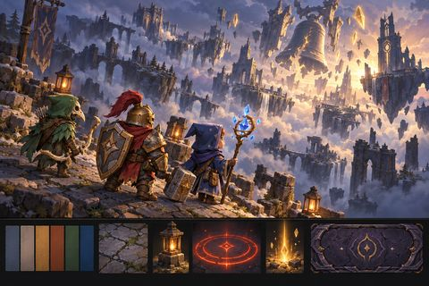<figcaption><b>Key art com os 3 heróis e uma faixa de estilo</b><br><span class="pil concluido"><i></i>Aprovada</span></figcaption></figure>
<figure class="" data-k="referencias">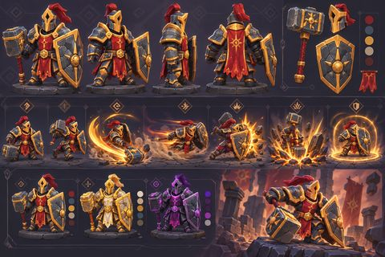<figcaption><b>Guerreiro</b>turnaround, poses de habilidade e skins<br><span class="pil concluido"><i></i>Aprovada</span></figcaption></figure>
<figure class="" data-k="referencias">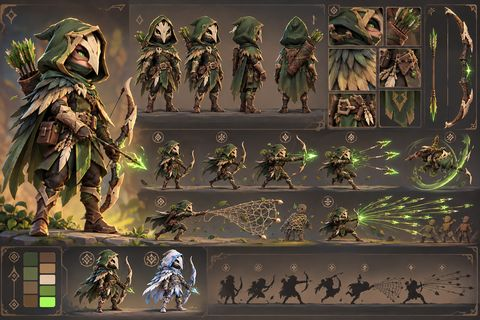<figcaption><b>Arqueiro</b>turnaround, poses de habilidade e skins<br><span class="pil concluido"><i></i>Aprovada</span></figcaption></figure>
<figure class="" data-k="referencias">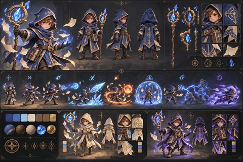<figcaption><b>Mago</b>turnaround, poses de habilidade e skins<br><span class="pil concluido"><i></i>Aprovada</span></figcaption></figure>
<figure class="" data-k="referencias">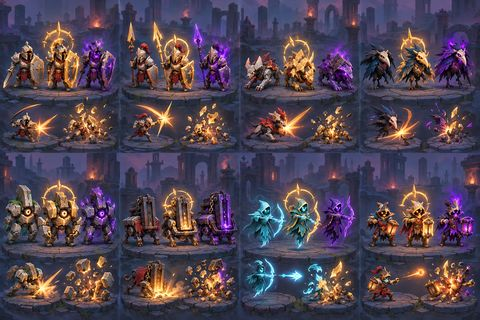<figcaption><b>8 inimigos do Ato I nas versões normal, elite e corrompida</b><br><span class="pil concluido"><i></i>Aprovada</span></figcaption></figure>
<figure class="" data-k="referencias">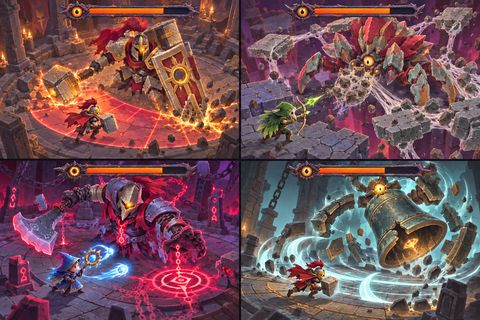<figcaption><b>Os 4 chefes do Ato I, cada um enfrentando um herói</b><br><span class="pil concluido"><i></i>Aprovada</span></figcaption></figure>
<figure class="" data-k="referencias">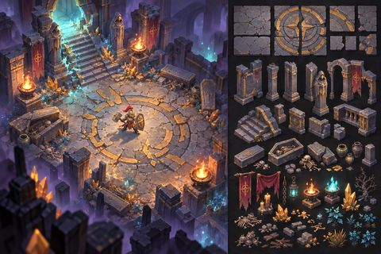<figcaption><b>Cripta Partida</b>arena com o Guerreiro e kit modular<br><span class="pil concluido"><i></i>Aprovada</span></figcaption></figure>
<figure class="" data-k="referencias">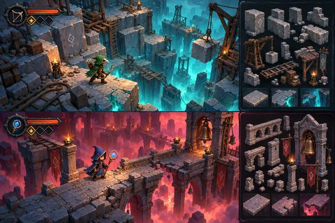<figcaption><b>Pedreira dos Ecos com o Arqueiro e Ponte do Sino com o Mago</b><br><span class="pil concluido"><i></i>Aprovada</span></figcaption></figure>
<figure class="" data-k="referencias">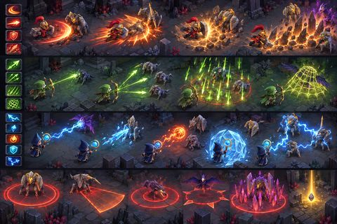<figcaption><b>Efeitos das habilidades das 3 classes contra inimigos do Ato I e os telegraphs dos inimigos</b><br><span class="pil concluido"><i></i>Aprovada</span></figcaption></figure>
<figure class="" data-k="referencias">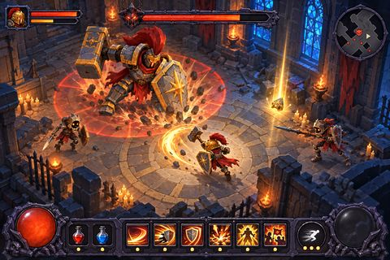<figcaption><b>HUD em combate</b>o Guerreiro contra o Guardião da Cripta<br><span class="pil concluido"><i></i>Aprovada</span></figcaption></figure>
<figure class="" data-k="referencias">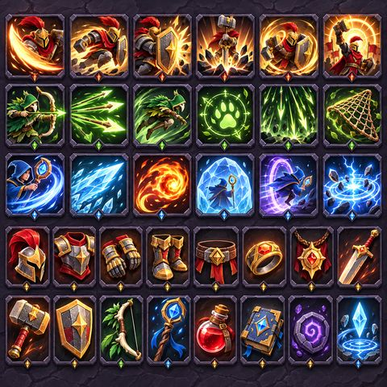<figcaption><b>Ícones de habilidades (com o herói de cada classe) e de itens</b><br><span class="pil concluido"><i></i>Aprovada</span></figcaption></figure>
<figure class="" data-k="referencias">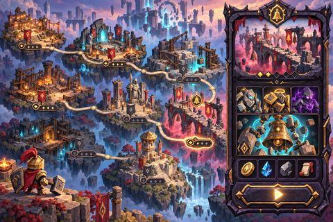<figcaption><b>Mapa do Ato I e seleção de área com o Vigia do Sino</b><br><span class="pil concluido"><i></i>Aprovada</span></figcaption></figure>
<figure class="" data-k="referencias">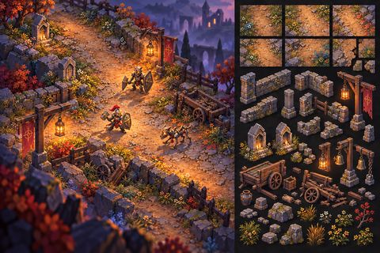<figcaption><b>Estrada das Lanternas (tutorial)</b>área com o Guerreiro e kit<br><span class="pil concluido"><i></i>Aprovada</span></figcaption></figure>
<figure class="" data-k="referencias">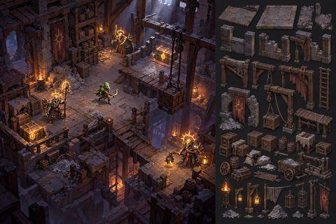<figcaption><b>Armazém de Cinzas (área opcional de saque)</b>área com o Arqueiro e kit<br><span class="pil concluido"><i></i>Aprovada</span></figcaption></figure>
<figure class="" data-k="referencias">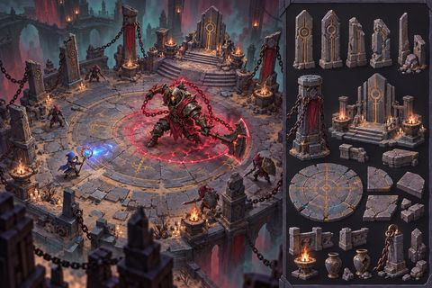<figcaption><b>Pátio dos Marcos</b>arena do Carrasco do Voto com o Mago e kit<br><span class="pil concluido"><i></i>Aprovada</span></figcaption></figure>
<figure class="" data-k="referencias">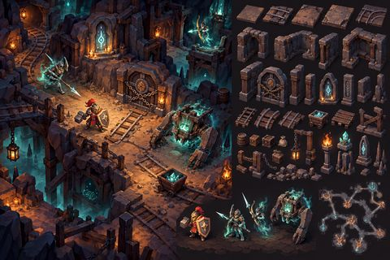<figcaption><b>Túneis do Voto</b>área com o Guerreiro, kit e planta da masmorra<br><span class="pil concluido"><i></i>Aprovada</span></figcaption></figure>
<figure class="" data-k="referencias">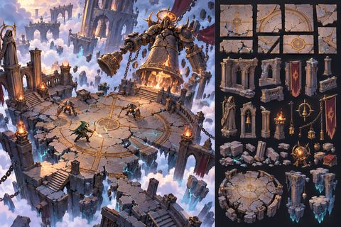<figcaption><b>Mirante Partido</b>arena final do Ato I com o Arqueiro e kit<br><span class="pil concluido"><i></i>Aprovada</span></figcaption></figure>
<figure class="" data-k="referencias">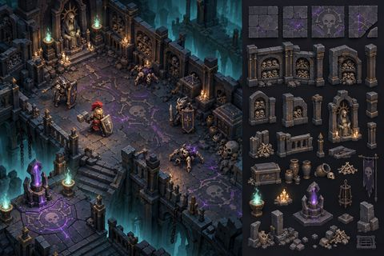<figcaption><b>Endgame, Ossário do Marco</b>área com o Guerreiro e kit<br><span class="pil concluido"><i></i>Aprovada</span></figcaption></figure>
<figure class="" data-k="referencias">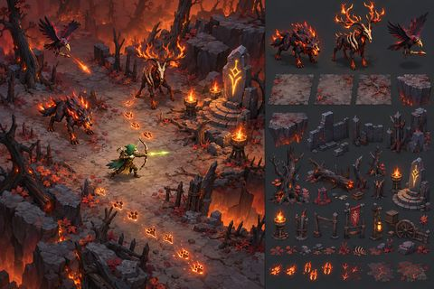<figcaption><b>Endgame, Trilha de Cinza</b>área com o Arqueiro, inimigos e kit<br><span class="pil concluido"><i></i>Aprovada</span></figcaption></figure>
<figure class="" data-k="referencias">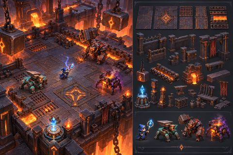<figcaption><b>Endgame, Salão do Martelo</b>área com o Mago, inimigos e kit<br><span class="pil concluido"><i></i>Aprovada</span></figcaption></figure>
<figure class="" data-k="referencias">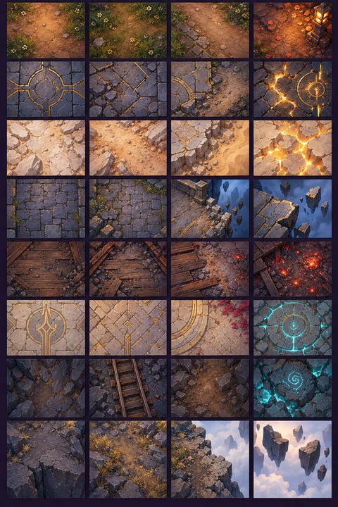<figcaption><b>Terrenos das 8 áreas do Ato I (4 texturas por área)</b><br><span class="pil concluido"><i></i>Aprovada</span></figcaption></figure>
<figure class="" data-k="referencias">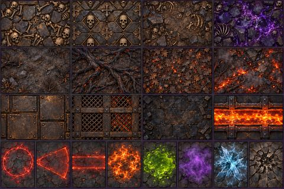<figcaption><b>Terrenos dos 3 mapas do endgame e marcas de perigo no chão</b><br><span class="pil concluido"><i></i>Aprovada</span></figcaption></figure>
<figure class="" data-k="referencias">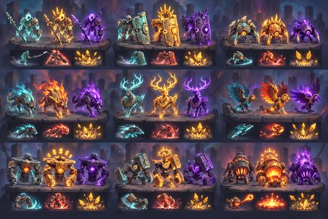<figcaption><b>9 inimigos do endgame (3 por mapa) nas versões normal, elite e corrompida</b><br><span class="pil concluido"><i></i>Aprovada</span></figcaption></figure>
<figure class="" data-k="referencias">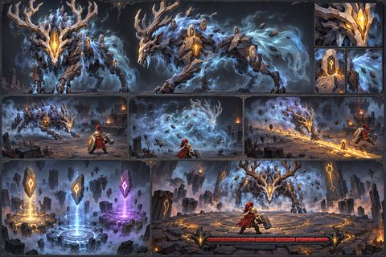<figcaption><b>Predador dos Marcos</b>vistas, fases, rastros e arena<br><span class="pil concluido"><i></i>Aprovada</span></figcaption></figure>
<figure class="" data-k="modelagem">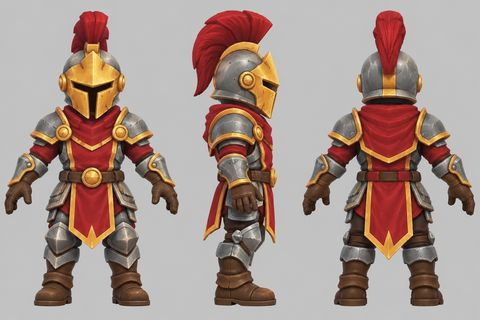<figcaption><b>Folha de modelagem: Guerreiro</b>Aprovada em 16/10. Base para o modelo 3D.<br><span class="pil concluido"><i></i>Aprovada</span></figcaption></figure>
<figure class="" data-k="modelagem">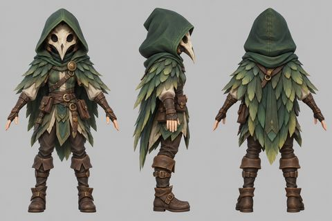<figcaption><b>Folha de modelagem: Arqueiro</b>Aprovada em 16/10. Base para o modelo 3D.<br><span class="pil concluido"><i></i>Aprovada</span></figcaption></figure>
<figure class="" data-k="modelagem">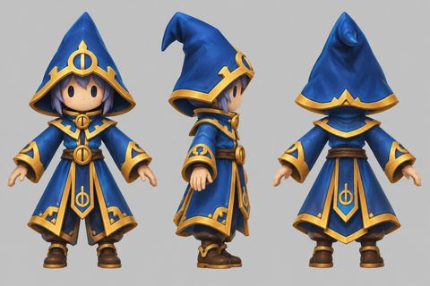<figcaption><b>Folha de modelagem: Mago</b>Aprovada em 16/10. Base para o modelo 3D.<br><span class="pil concluido"><i></i>Aprovada</span></figcaption></figure>
<figure class="" data-k="modelagem">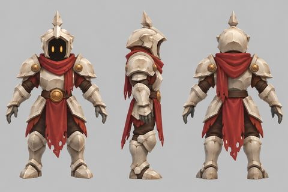<figcaption><b>Folha de modelagem: Sentinela Oca</b>Aprovada em 16/10. Base para o modelo 3D.<br><span class="pil concluido"><i></i>Aprovada</span></figcaption></figure>
<figure class="" data-k="modelagem">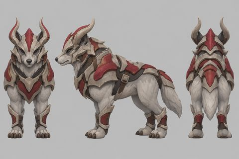<figcaption><b>Folha de modelagem: Cão-de-Cinza</b>Aprovada em 16/10. Base para o modelo 3D.<br><span class="pil concluido"><i></i>Aprovada</span></figcaption></figure>
<figure class="" data-k="modelagem">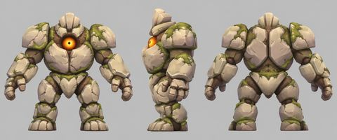<figcaption><b>Folha de modelagem: Arauto de Pedra</b>Aprovada em 16/10. Base para o modelo 3D.<br><span class="pil concluido"><i></i>Aprovada</span></figcaption></figure>
<figure class="" data-k="modelagem">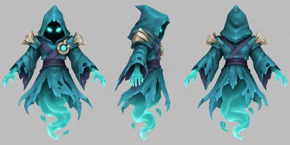<figcaption><b>Folha de modelagem: Arqueiro Espectral</b>Aprovada em 16/10. Base para o modelo 3D.<br><span class="pil concluido"><i></i>Aprovada</span></figcaption></figure>
<figure class="" data-k="modelagem">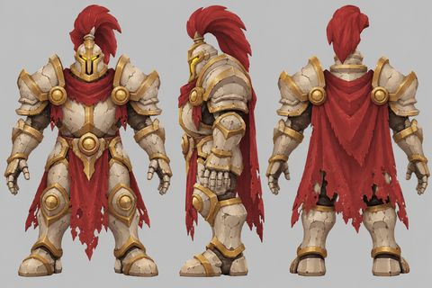<figcaption><b>Folha de modelagem: Guardião da Cripta</b>Aprovada em 16/10. Base para o modelo 3D.<br><span class="pil concluido"><i></i>Aprovada</span></figcaption></figure>
<figure class="" data-k="modelagem">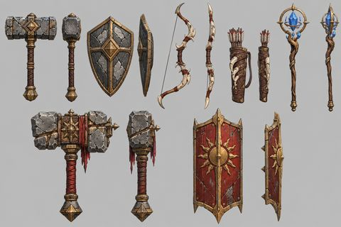<figcaption><b>Folha de modelagem: Armas</b>Aprovada em 16/10. Base para o modelo 3D.<br><span class="pil concluido"><i></i>Aprovada</span></figcaption></figure>
<figure class="" data-k="modulares">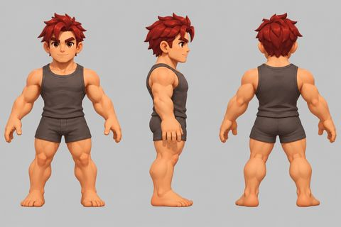<figcaption><b>Guerreiro, corpo base</b>Corpo base; rostos novos do Guerreiro e do Arqueiro.<br><span class="pil concluido"><i></i>Aprovada</span></figcaption></figure>
<figure class="" data-k="modulares">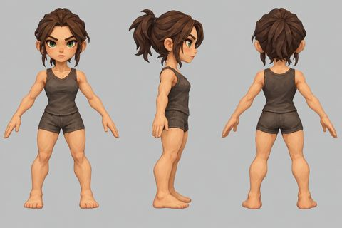<figcaption><b>Arqueiro, corpo base</b>Corpo base; rostos novos do Guerreiro e do Arqueiro.<br><span class="pil concluido"><i></i>Aprovada</span></figcaption></figure>
<figure class="" data-k="modulares">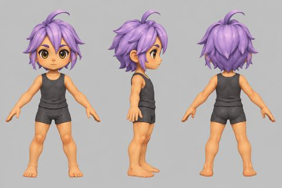<figcaption><b>Mago, corpo base</b>Corpo base; rostos novos do Guerreiro e do Arqueiro.<br><span class="pil concluido"><i></i>Aprovada</span></figcaption></figure>
<figure class="" data-k="modulares">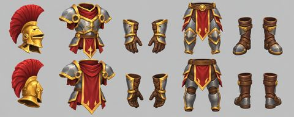<figcaption><b>Guerreiro, armadura inicial</b>Armadura inicial em 5 peças: elmo, peitoral, luvas, calça e botas.<br><span class="pil concluido"><i></i>Aprovada</span></figcaption></figure>
<figure class="" data-k="modulares">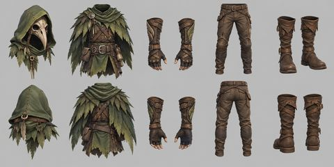<figcaption><b>Arqueiro, armadura inicial</b>Armadura inicial em 5 peças: elmo, peitoral, luvas, calça e botas.<br><span class="pil concluido"><i></i>Aprovada</span></figcaption></figure>
<figure class="" data-k="modulares">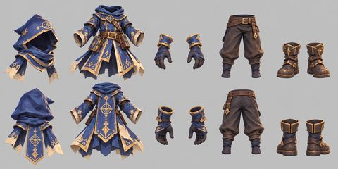<figcaption><b>Mago, armadura inicial</b>Armadura inicial em 5 peças: elmo, peitoral, luvas, calça e botas.<br><span class="pil concluido"><i></i>Aprovada</span></figcaption></figure>
<figure class="" data-k="cenario">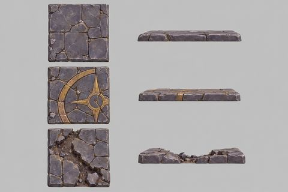<figcaption><b>Cripta: Pisos</b>Folha do cenário da Cripta, aprovada em 16/10.<br><span class="pil concluido"><i></i>Aprovada</span></figcaption></figure>
<figure class="" data-k="cenario">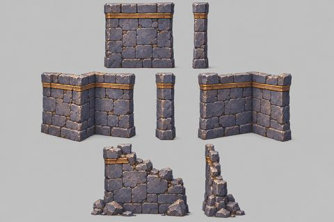<figcaption><b>Cripta: Paredes</b>Folha do cenário da Cripta, aprovada em 16/10.<br><span class="pil concluido"><i></i>Aprovada</span></figcaption></figure>
<figure class="" data-k="cenario">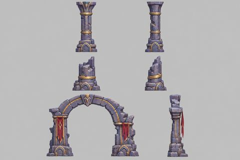<figcaption><b>Cripta: Pilar e arco</b>Folha do cenário da Cripta, aprovada em 16/10.<br><span class="pil concluido"><i></i>Aprovada</span></figcaption></figure>
<figure class="" data-k="cenario">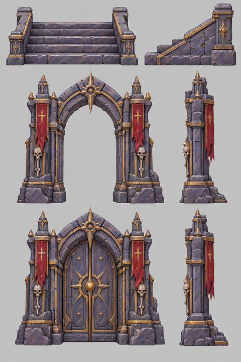<figcaption><b>Cripta: Escada e portal</b>Folha do cenário da Cripta, aprovada em 16/10.<br><span class="pil concluido"><i></i>Aprovada</span></figcaption></figure>
<figure class="" data-k="cenario">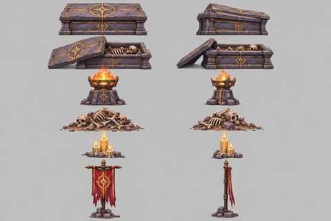<figcaption><b>Cripta: Decoração</b>Folha do cenário da Cripta, aprovada em 16/10.<br><span class="pil concluido"><i></i>Aprovada</span></figcaption></figure>
<figure class="" data-k="cenario">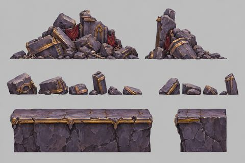<figcaption><b>Cripta: Entulho e abismo</b>Folha do cenário da Cripta, aprovada em 16/10.<br><span class="pil concluido"><i></i>Aprovada</span></figcaption></figure>
<figure class="ag" data-k="graybox">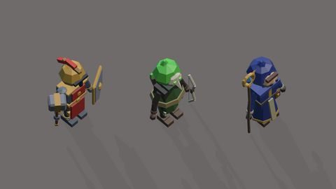<figcaption><b>Graybox: Heróis (fila)</b>Aprovado só como provisório.<br><span class="pil andamento"><i></i>Provisório</span></figcaption></figure>
<figure class="ag" data-k="graybox">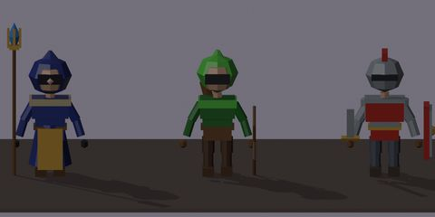<figcaption><b>Graybox: Heróis (frente)</b>Aprovado só como provisório.<br><span class="pil andamento"><i></i>Provisório</span></figcaption></figure>
<figure class="ag" data-k="graybox">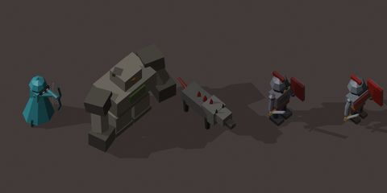<figcaption><b>Graybox: Inimigos</b>Aprovado só como provisório.<br><span class="pil andamento"><i></i>Provisório</span></figcaption></figure>
<figure class="ag" data-k="graybox">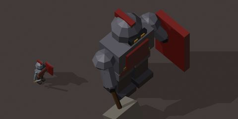<figcaption><b>Graybox: Guardião da Cripta</b>Aprovado só como provisório.<br><span class="pil andamento"><i></i>Provisório</span></figcaption></figure>
</div>
<h2>Sessões na nuvem</h2><div class='grade'>
<article class="card"><header><h3>1. Revisão do ShatterCore da Etapa 2 (Linux)</h3><span class="pil nuvem"><i></i>Na nuvem</span></header><p class="mut peq">Backend - iniciada em 17/10/2026</p><p>Relatório no docs/17.</p><p class="prox"><b>Resultado:</b> Concluída: achados críticos e altos corrigidos; CI do GitHub verde de novo.</p></article>
<article class="card"><header><h3>2. Golpe devorado na barra na hora do veredito e dicas dos Ecos (A4, A5)</h3><span class="pil nuvem"><i></i>Na nuvem</span></header><p class="mut peq">Cliente - iniciada em 19/10/2026</p><p>PRs 25 e 27.</p><p class="prox"><b>Resultado:</b> Concluída e mesclada; CI do cliente verde.</p></article>
<article class="card"><header><h3>3. Notas abertas do core e dos dados (A6)</h3><span class="pil nuvem"><i></i>Na nuvem</span></header><p class="mut peq">Backend - iniciada em 19/10/2026</p><p>PR 28: world_state no esquema, limite de 256 missões, leitor do save e totais limitados a 100.</p><p class="prox"><b>Resultado:</b> Concluída e mesclada.</p></article>
<article class="card"><header><h3>4. Nível do herói, inventário e hitstop</h3><span class="pil nuvem"><i></i>Na nuvem</span></header><p class="mut peq">Cliente - iniciada em 19/10/2026</p><p>PRs 26 e 31.</p><p class="prox"><b>Resultado:</b> Concluída e mesclada.</p></article>
<article class="card"><header><h3>5. Balanceamento Exorcizar x Devorar e Único da Mancha</h3><span class="pil nuvem"><i></i>Na nuvem</span></header><p class="mut peq">Dados - iniciada em 19/10/2026</p><p>PRs 29 e 32 (Égide Sem Nome).</p><p class="prox"><b>Resultado:</b> Concluída e mesclada.</p></article>
<article class="card"><header><h3>6. Trava de recompensa de missão e Fome/Mancha no idle (A7 parcial)</h3><span class="pil nuvem"><i></i>Na nuvem</span></header><p class="mut peq">Backend - iniciada em 19/10/2026</p><p>PRs 33 e 34; contrato 15.4 e 15.5.</p><p class="prox"><b>Resultado:</b> Concluída e mesclada; trava desligada nos dados.</p></article>
</div>
<h2>Infraestrutura</h2><div class='tab'><table><tr><th>Item</th><th>Detalhe</th></tr>
<tr><td>Godot 4 (.NET)</td><td>Motor do jogo; cliente 2D em GDScript em godot/scripts2d/, Godot e MCP no disco D</td></tr>
<tr><td>Repositório privado no GitHub</td><td>github.com/Willvinicius2/echoes-of-the-shatter, com Git LFS</td></tr>
<tr><td>CI</td><td>.github/workflows/core.yml (ShatterCore) e cliente2d.yml (teste headless e lint de GDScript)</td></tr>
<tr><td>PixelLab</td><td>Geração dos sprites em pixel art; o saldo acabou e trava os inimigos da área 2</td></tr>
<tr><td>Visual Studio Build Tools</td><td>MSVC 14.50, para o ShatterCore no Windows</td></tr>
<tr><td>Roteiro do sócio (Artifact)</td><td>https://claude.ai/artifact/5G5WBocgrp8NAeLKiF9FP8</td></tr>
<tr><td>Unity 6.3 e pipeline 3D (Blender, TripoSG)</td><td>Arquivados no branch arquivo/unity-final; a pasta antiga só é apagada quando o dono confirmar</td></tr>
</table></div></main>
<script>
(function(){var b=document.querySelectorAll('.abas button'),f=document.querySelectorAll('.gal figure');
b.forEach(function(x){x.addEventListener('click',function(){var k=x.dataset.f;
b.forEach(function(y){y.setAttribute('aria-pressed',y===x)});
f.forEach(function(g){g.hidden=!(k==='todas'||g.dataset.k===k)})})})})();
</script>
<script type="application/json" id="votacao-dados">[{"id": "capsulas-steam", "opcoes": [{"id": "A", "nome": "A. Artista contratado", "efeito": "Segue a política do plano e evita críticas a cápsula feita por IA. Tem custo e prazo, e exige contrato de cessão de direitos com o artista."}, {"id": "B", "nome": "B. IA declarada", "efeito": "Rápido, barato e coerente com o resto da arte. Parte do público reage mal a cápsulas feitas por IA."}, {"id": "C", "nome": "C. Mista", "efeito": "IA para compor a cena e artista pintando por cima. Custo intermediário; o uso de IA continua tendo de ser declarado."}]}, {"id": "registros-quem", "opcoes": [{"id": "A", "nome": "A. Você cuida de tudo", "efeito": "Concentra as decisões, mas divide seu tempo com a produção do jogo."}, {"id": "B", "nome": "B. Seu sócio assume a parte burocrática", "efeito": "Você acompanha a produção e ele toca CNPJ, Steam e registros."}, {"id": "C", "nome": "C. Contador e advogado", "efeito": "Contador para CNPJ e impostos; advogado só para marca e contratos. Tem custo, mas reduz o risco de erro."}]}, {"id": "registros-quando", "opcoes": [{"id": "A", "nome": "A. Começar já", "efeito": "A página entra no ar mais cedo e as wishlists se acumulam por mais tempo. O gasto com CNPJ e Steam Direct vem antes de haver jogo pronto."}, {"id": "B", "nome": "B. Junto com a demo", "efeito": "Segue o plano: CNPJ e conta na Steam no começo da fase da demo, com a página no ar antes do Next Fest. Depende da decisão sobre a demo."}, {"id": "C", "nome": "C. Só na etapa 5", "efeito": "Adia o gasto e a burocracia para quando o jogo estiver quase pronto. A página entra tarde e o lançamento sai com menos wishlists."}]}, {"id": "paginacao-windows", "opcoes": [{"id": "A", "nome": "A. Tudo para o D:", "efeito": "Libera todo o espaço do arquivo no C:. O D: precisa ter espaço livre sobrando."}, {"id": "B", "nome": "B. Pequeno no C: e o resto no D:", "efeito": "Deixa 2 a 4 GB no C: (o Windows usa para relatórios de travamento) e coloca o principal no D:."}, {"id": "C", "nome": "C. Não mexer agora", "efeito": "Libera espaço no C: de outra forma. O risco de travar por falta de memória continua."}]}]</script>
<script>/* Votação e comentários por pergunta, gravados no banco do artifact.
 * Um documento por pessoa em votos/<id>, com respostas[<id da pergunta>] = {opcao, comentario, em}.
 * A página traz <script type="application/json" id="votacao-dados"> com [{id, opcoes: [{id, nome, efeito}]}]
 * e um <div class="votacao" data-q="<id da pergunta>"> onde cada pergunta deve aparecer.
 * Capabilities do artifact: db (regras em tools/votacao/README.md) e user com scope "profile". */
(function () {
  const dadosEl = document.getElementById('votacao-dados');
  if (!dadosEl) return;
  const PERGUNTAS = JSON.parse(dadosEl.textContent);
  const porId = Object.fromEntries(PERGUNTAS.map(p => [p.id, p]));
  const V = {db: null, user: null, eu: null, pode: false, votos: {}, meu: {}, fila: Promise.resolve(), salvando: false, aviso: 'Carregando votos…'};

  const el = (tag, cls, txt) => { const n = document.createElement(tag); if (cls) n.className = cls; if (txt != null) n.textContent = txt; return n; };
  const nomeOpcao = (q, o) => (porId[q]?.opcoes || []).find(x => x.id === o)?.nome || o;
  const quando = iso => { const d = new Date(iso); return isNaN(d) ? '' : d.toLocaleDateString('pt-BR', {day: '2-digit', month: '2-digit'}) + ' ' + d.toLocaleTimeString('pt-BR', {hour: '2-digit', minute: '2-digit'}); };

  function montar(caixa) {
    const q = caixa.dataset.q, p = porId[q];
    if (!p) return;
    const ul = el('ul', 'v-opcoes');
    for (const o of p.opcoes || []) {
      const b = el('button', 'v-op'); b.type = 'button'; b.dataset.q = q; b.dataset.o = o.id; b.setAttribute('aria-pressed', 'false');
      const quem = el('span', 'v-quem'); quem.append(el('span', 'v-n', '0 votos'), el('span', 'v-rostos'));
      b.append(el('b', null, o.nome), el('span', 'v-ef', o.efeito || ''), quem);
      const li = el('li'); li.append(b); ul.append(li);
    }
    const conversa = el('div', 'v-conversa');
    const ta = el('textarea', 'v-meu'); ta.id = 'vc-' + q; ta.rows = 2; ta.dataset.q = q;
    ta.placeholder = 'Explique seu voto, faça uma pergunta ou sugira outra opção';
    const rot = el('label', 'v-rotulo', 'Seu comentário'); rot.htmlFor = ta.id;
    const salvarBtn = el('button', 'v-salvar', 'Salvar comentário'); salvarBtn.type = 'button'; salvarBtn.dataset.q = q;
    const st = el('span', 'v-status'); st.setAttribute('role', 'status'); st.setAttribute('aria-live', 'polite');
    const acoes = el('div', 'v-acoes'); acoes.append(salvarBtn, st);
    conversa.append(el('h4', 'v-tit', 'Comentários'), el('ul', 'v-coms'), rot, ta, acoes);
    caixa.replaceChildren(el('h4', 'v-tit', 'Opções · clique para votar'), ul, conversa);
  }

  async function pintar() {
    const ids = Object.keys(V.votos);
    const ps = V.user && ids.length ? await V.user.profiles(ids) : {};
    const nome = id => id === V.eu ? 'Você' : (ps[id]?.name || 'Alguém');
    const rosto = id => { const i = el('img', 'v-rosto'); i.src = ps[id]?.avatarUrl || ''; i.alt = ''; i.title = nome(id); return i; };
    document.querySelectorAll('.v-op').forEach(b => {
      const {q, o} = b.dataset;
      const quem = ids.filter(id => V.votos[id]?.[q]?.opcao === o);
      b.setAttribute('aria-pressed', String(V.meu[q]?.opcao === o));
      b.classList.toggle('v-bloq', !V.pode);
      b.querySelector('.v-n').textContent = quem.length === 1 ? '1 voto' : quem.length + ' votos';
      b.querySelector('.v-rostos').replaceChildren(...quem.map(rosto));
    });
    document.querySelectorAll('.votacao').forEach(cx => {
      const q = cx.dataset.q, lista = cx.querySelector('.v-coms');
      if (!lista) return;
      const coms = ids.filter(id => (V.votos[id]?.[q]?.comentario || '').trim())
        .sort((a, b) => String(V.votos[a][q].em || '').localeCompare(String(V.votos[b][q].em || '')));
      lista.replaceChildren(...coms.map(id => {
        const r = V.votos[id][q], li = el('li'), cab = el('div', 'v-cab');
        cab.append(rosto(id), el('b', null, nome(id)), el('span', null, (r.opcao ? 'votou ' + nomeOpcao(q, r.opcao) + ' · ' : '') + quando(r.em)));
        li.append(cab, el('p', null, r.comentario));
        return li;
      }));
      if (!coms.length) lista.append(el('li', 'v-vazio', 'Nenhum comentário ainda.'));
      const ta = cx.querySelector('.v-meu');
      if (!ta.dataset.mexido && document.activeElement !== ta) ta.value = V.meu[q]?.comentario || '';
      ta.disabled = cx.querySelector('.v-salvar').disabled = !V.pode;
      const st = cx.querySelector('.v-status');
      if (!st.dataset.fixo) st.textContent = V.aviso;
    });
  }

  function salvar(q, msgOk) {
    const st = document.querySelector('.votacao[data-q="' + q + '"] .v-status');
    const r = V.meu[q];
    if (r) { r.em = new Date().toISOString(); if (!r.opcao && !(r.comentario || '').trim()) delete V.meu[q]; }
    const corpo = {respostas: JSON.parse(JSON.stringify(V.meu))};
    V.salvando = true;
    if (st) { st.dataset.fixo = '1'; st.textContent = 'Salvando…'; }
    V.fila = V.fila.then(async () => {
      try {
        await V.db.doc('votos/' + V.eu).set(corpo);
        if (st) st.textContent = msgOk;
      } catch (e) {
        if (e?.code === 'invalid_argument') { V.pode = false; V.aviso = 'Seu acesso não permite votar. Peça ao dono um convite de Editor por e-mail.'; }
        if (st) st.textContent = e?.code === 'quota_exceeded' ? 'O espaço de votos encheu. Avise o dono.'
          : e?.code === 'invalid_argument' ? V.aviso : 'Não foi possível salvar. Tente de novo.';
      } finally { V.salvando = false; pintar(); }
    });
  }

  document.addEventListener('click', e => {
    const b = e.target.closest('.v-op');
    if (b) {
      const {q, o} = b.dataset;
      if (!V.pode) {
        const st = document.querySelector('.votacao[data-q="' + q + '"] .v-status');
        if (st) { st.dataset.fixo = '1'; st.textContent = V.aviso; }
        return;
      }
      const r = V.meu[q] || (V.meu[q] = {});
      r.opcao = r.opcao === o ? '' : o;
      pintar();
      salvar(q, r.opcao ? 'Voto salvo.' : 'Voto retirado.');
      return;
    }
    const s = e.target.closest('.v-salvar');
    if (s && V.pode) {
      const q = s.dataset.q, ta = document.querySelector('.v-meu[data-q="' + q + '"]');
      const r = V.meu[q] || (V.meu[q] = {});
      r.comentario = ta.value.trim().slice(0, 4000);
      delete ta.dataset.mexido;
      salvar(q, r.comentario ? 'Comentário salvo.' : 'Comentário apagado.');
    }
  });
  document.addEventListener('input', e => { if (e.target.classList?.contains('v-meu')) e.target.dataset.mexido = '1'; });

  async function iniciar() {
    document.querySelectorAll('.votacao').forEach(montar);
    const c = window.claude;
    if (!c || typeof c.use !== 'function') { V.aviso = 'Abra esta página pelo link do claude.ai para votar e comentar.'; return pintar(); }
    [V.user, V.db] = await Promise.all([c.use('user'), c.use('db')]);
    if (!V.db) { V.aviso = 'Para votar e comentar, entre no claude.ai com o convite de Editor que o dono enviou por e-mail.'; return pintar(); }
    V.eu = V.user ? await V.user.id() : null;
    const pode = V.user ? await V.user.can('data.write') : null;
    V.pode = !!V.eu && pode !== false;
    V.aviso = V.pode ? '' : 'Você pode ver os votos, mas não votar. Para votar, peça ao dono um convite de Editor por e-mail.';
    V.db.collection('votos').onSnapshot(snap => {
      const novo = {};
      for (const d of snap.docs) { const r = d.data()?.respostas; if (r && typeof r === 'object') novo[d.id] = r; }
      V.votos = novo;
      if (V.eu && !V.salvando) V.meu = JSON.parse(JSON.stringify(novo[V.eu] || {}));
      pintar();
    }, () => { V.aviso = 'Não foi possível carregar os votos agora. Recarregue a página.'; pintar(); });
  }
  iniciar();
})();
</script>